第 14 集: PCA 主成分分析
1. 本集定位: 高维特征太多怎么办
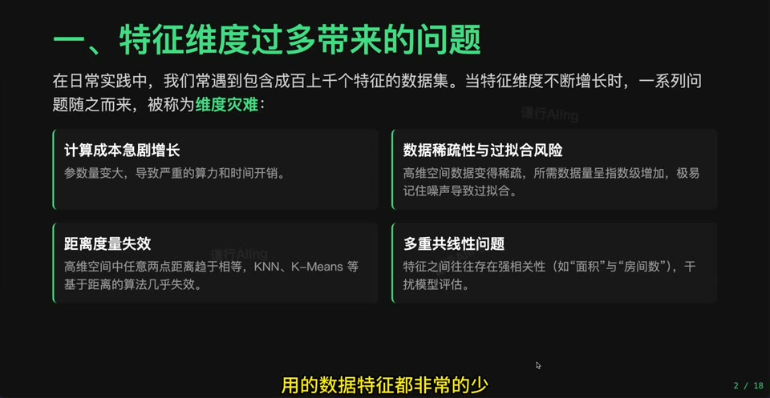
PCA 解决的是特征多、冗余高、可视化困难的问题。它属于无监督降维方法。
2. 传统降维方法
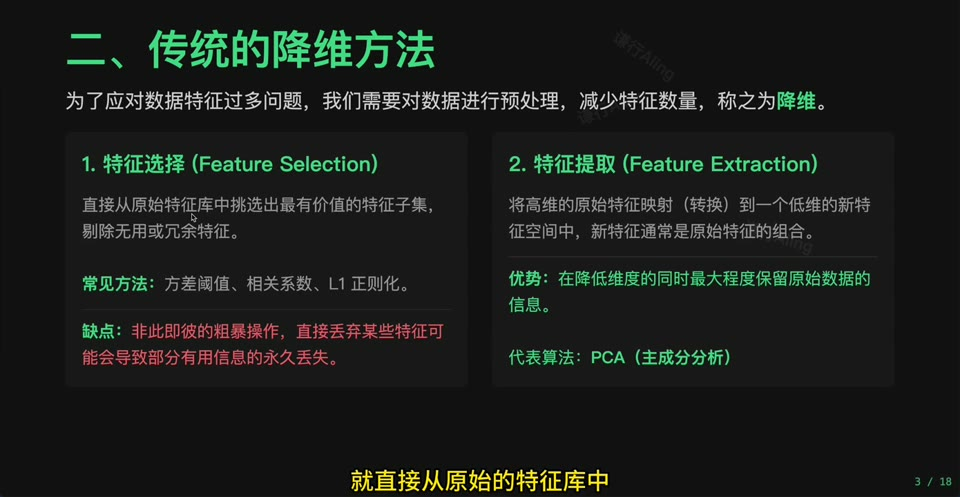
降维可以分为特征选择和特征提取。PCA 属于特征提取: 它把原特征组合成新的主成分。
3. 什么是 PCA
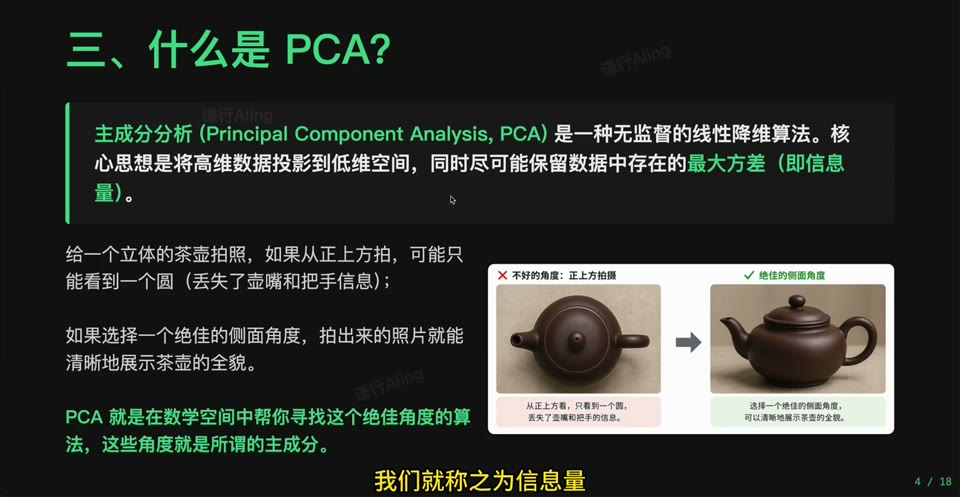
PCA 寻找能保留数据最大方差的方向,用少数新坐标表示原始数据中的主要变化。
4. 身高体重例子
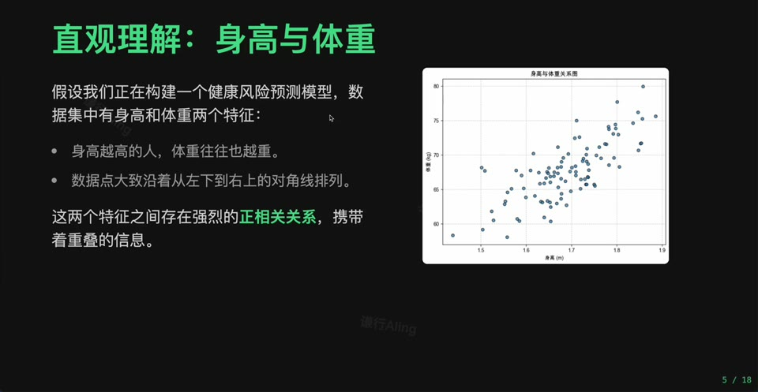
当两个变量高度相关时,它们包含的信息有重叠。PCA 会找出最能代表整体变化的一条方向。
5. 寻找最佳代表方向
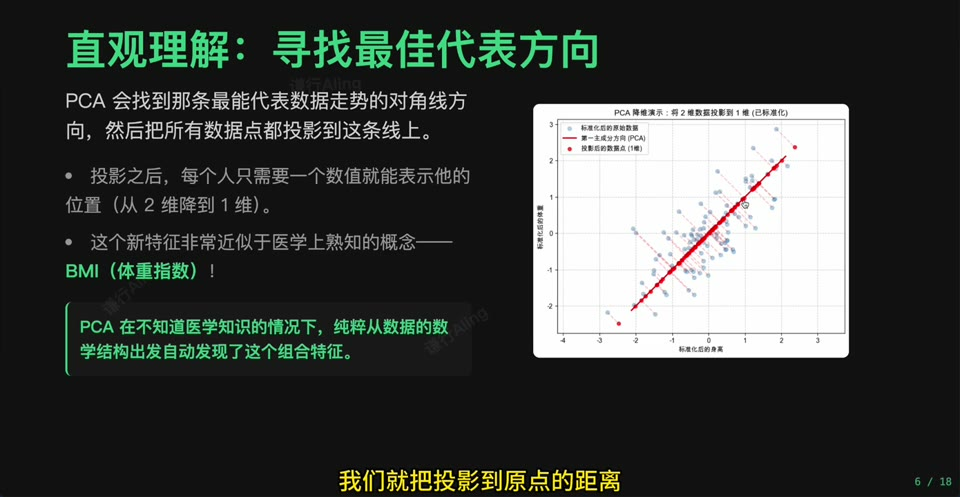
第一主成分是数据投影后方差最大的方向。它尽量保留原数据的主要差异。
6. 房价地图例子
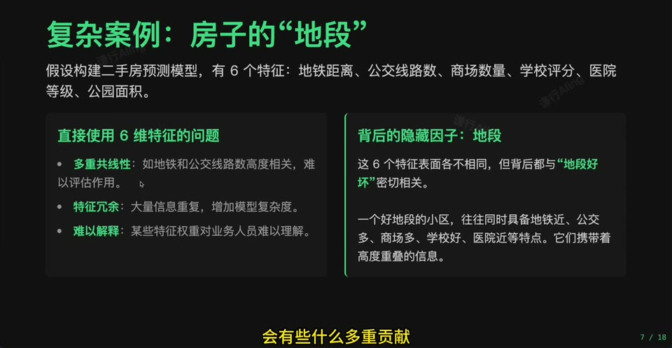
二维地理坐标或多维房价特征都可能存在冗余结构。PCA 用新轴重新表达数据。
7. PCA 的压缩结果
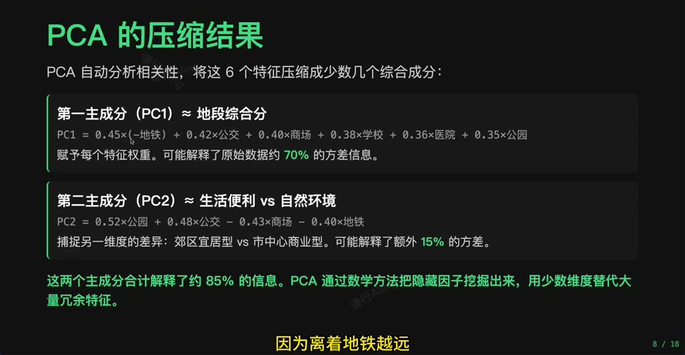
压缩不是简单删除列,而是用主成分保留尽可能多的信息。保留多少主成分要看解释方差比例。
8. 方差与协方差
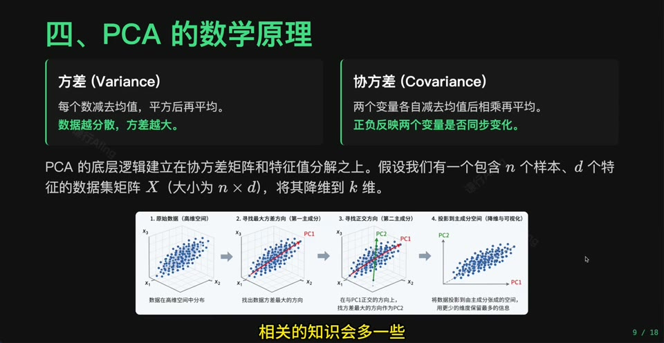
方差衡量单个特征的变化范围,协方差衡量两个特征是否一起变化。PCA 的数学基础就在这里。
9. 数学流程总览
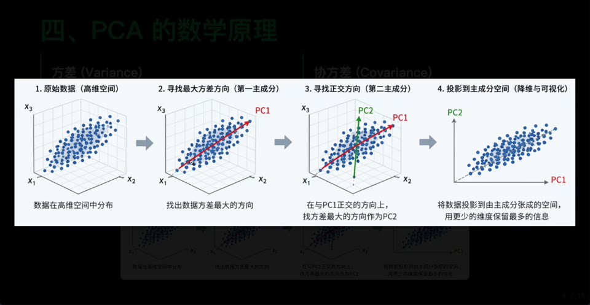
PCA 的步骤可以概括为: 去中心化、计算协方差矩阵、求特征值和特征向量、选择主成分、投影数据。
10. 数据去中心化
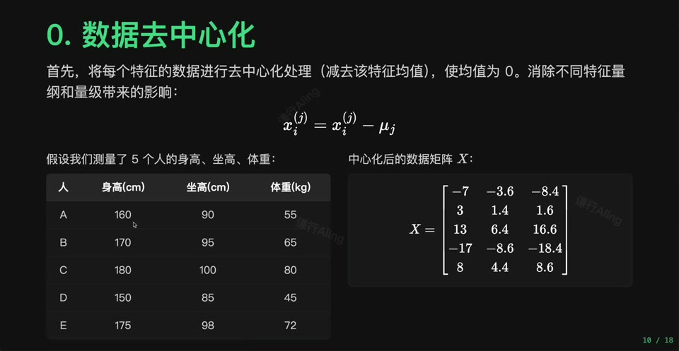
去中心化让每个特征均值为 0,避免均值位置影响协方差和方向判断。
11. 协方差矩阵
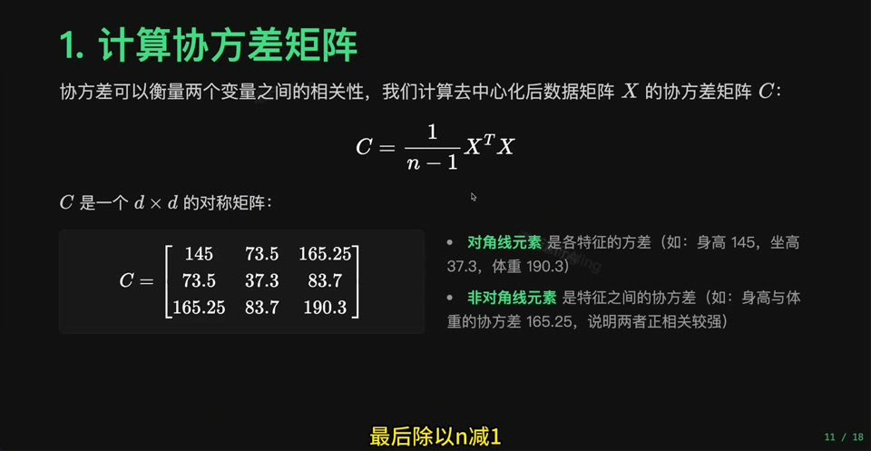
协方差矩阵描述所有特征之间的共同变化关系,它是 PCA 找方向的输入。
12. 特征值与特征向量
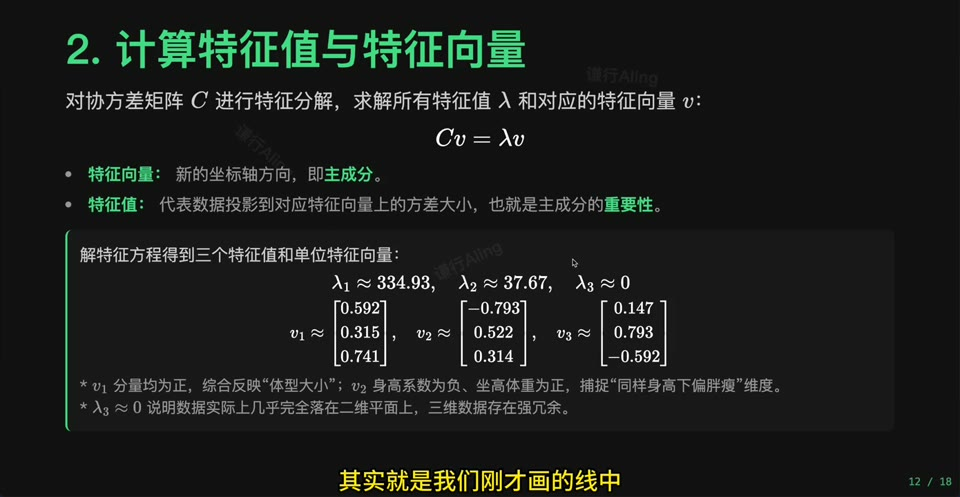
特征向量给出方向,特征值表示该方向上的方差大小。特征值越大,对应方向保留的信息越多。
13. 选择主成分并构建投影矩阵
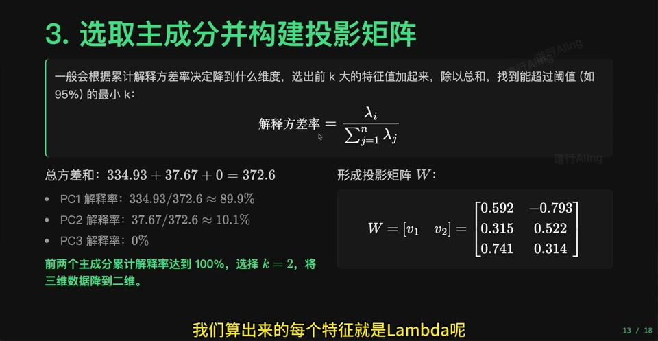
按特征值从大到小选择前几个特征向量,就得到投影矩阵。这个矩阵把原数据映射到低维空间。
14. 数据投影
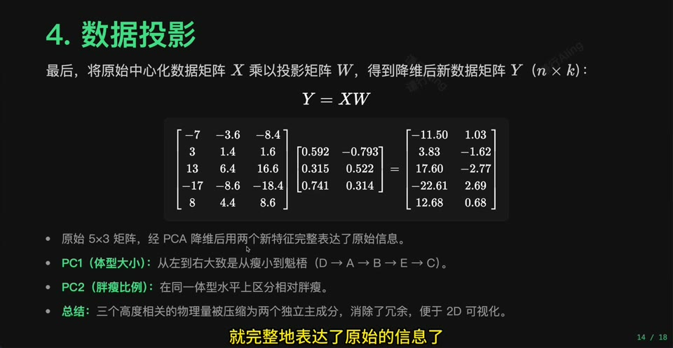
投影后得到的新数据维度更低,但仍尽量保留原数据的主要结构。
15. 实战结果: 2D 投影可视化
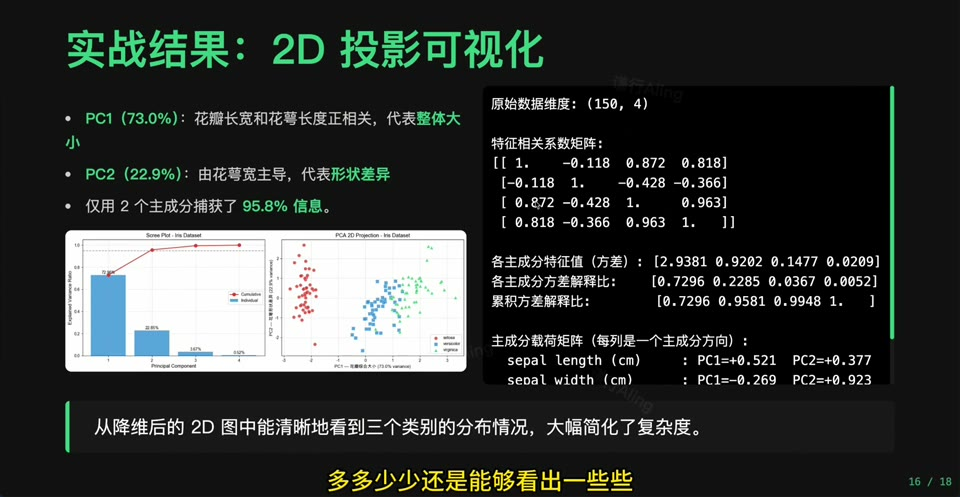
PCA 常用于把高维数据压到 2D/3D 进行可视化。它不是分类器,但能帮助观察数据结构。
16. 随机森林 vs PCA
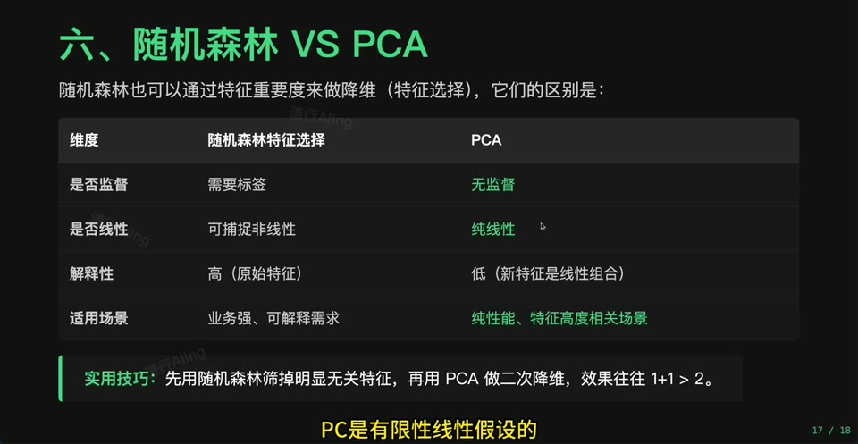
PCA 是无监督降维,随机森林特征重要性是监督信号下的特征评估。两者回答的问题不同。
17. 总结与局限
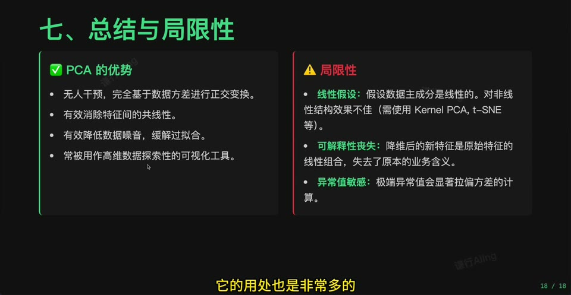
PCA 高效、可解释、适合线性降维,但只能捕捉线性结构,且主成分未必有直观业务含义。
入库建议
- 建议建立主节点
PCA: 用主成分压缩高维数据。 - 数学引用应落到线性代数的协方差矩阵、特征值、特征向量。
- 实验建议用鸢尾花或手写数字先做 2D 可视化,再讨论信息损失。